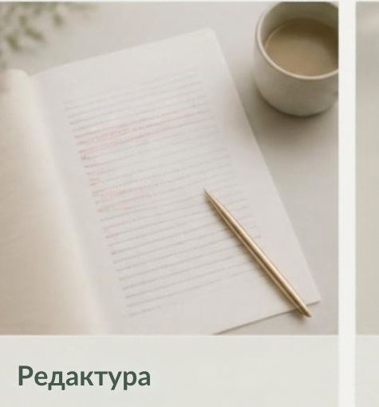
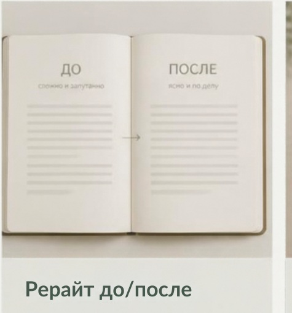

Статьи и материалы
Статьи и материалыПортфолио / Тексты для коммерции
Слово и смысл
Коммерческие тексты должны быть понятными, точными и подходить задаче площадки. Здесь собраны примеры текстовой работы: статьи, описания, публикации, рерайт и редактура.
Подборка материалов
Статьи и материалы
Редактура и рерайт
Адаптация и переписываниеСтраница будет наполняться конкретными работами, описаниями задач и результатами проектов. Иллюстрации здесь пока служат визуальными примерами оформления раздела.